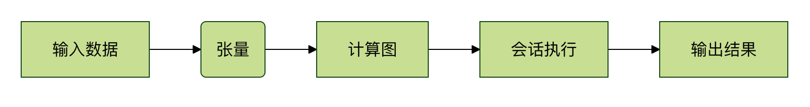

TensorFlow 入門
TensorFlow は Google Brain チームによって開発されたオープンソースの機械学習フレームワークで、深層学習の研究や本番環境で広く使用されています。
TensorFlow は、さまざまな機械学習モデルを構築・トレーニングするための柔軟なプラットフォームを提供します。

中核概念
- テンソル（Tensor）: 多次元配列であり、TensorFlow における基本データ単位です。
- 計算グラフ（Computational Graph）: データ（テンソル）の流れ（フロー）を表す有向グラフです。
- セッション（Session）: 計算グラフを実行するランタイム環境です。

TensorFlow の歴史と発展
発展のタイムライン
- 2011年: Google 社内で初代機械学習システム DistBelief の使用が開始されました。
- 2015年11月: TensorFlow 1.0 が正式にオープンソースとして公開されました。
- 2017年2月: TensorFlow 1.0 安定版がリリースされました。
- 2019年10月: TensorFlow 2.0 がリリースされ、Eager Execution と Keras の統合が導入されました。
- 現在まで: 継続的に更新され、現在は 2.x シリーズまでリリースされています。
重要なマイルストーン
TensorFlow 1.x の時代：
- 静的計算グラフに基づく
- 明示的にセッションを作成する必要がある
- 学習曲線が比較的急である
TensorFlow 2.x の時代：
- デフォルトで Eager Execution（即時実行）が有効
- Keras 高レベル API と深く統合
- より Pythonic でユーザーフレンドリー
- モデルの構築とトレーニングのプロセスを簡素化
TensorFlow の中核的特徴
1. 柔軟性と拡張性
- マルチプラットフォーム対応: CPU、GPU、TPU 上で実行可能
- 多言語バインディング: Python、C++、Java、Go など複数のプログラミング言語をサポート
- クロスデバイスデプロイ: サーバーからモバイル端末まで、クラウドからエッジコンピューティングまで
2. 強力なエコシステム
TensorFlow 生态系统 ├── TensorFlow Core（核心库） ├── TensorFlow Lite（移动和嵌入式设备） ├── TensorFlow.js（JavaScript 和网页） ├── TensorFlow Serving（模型服务化） ├── TensorFlow Extended (TFX)（生产级 ML 管道） ├── TensorFlow Hub（预训练模型库） └── TensorBoard（可视化工具）
3. 高性能計算
- 自動微分: 勾配を自動計算し、バックプロパゲーション（逆伝播）を簡素化
- ベクトル化演算: 現代のプロセッサの並列計算能力を最大限に活用
- 分散トレーニング: 複数マシン・複数 GPU にわたる大規模トレーニングをサポート
- グラフ最適化: コンパイル時および実行時の多様な最適化戦略
4. 使いやすさ（TensorFlow 2.x）
- Keras 統合: 高レベルで直感的な API を提供
- Eager Execution: 通常の Python コードを書くように機械学習コードを記述できる
- 豊富なプリビルドコンポーネント: レイヤー、オプティマイザー、損失関数などがすぐに使える
TensorFlow の主な利用シーン
1. 深層学習とニューラルネットワーク
- 画像認識物体検出、顔認識、医用画像解析
- 自然言語処理: 機械翻訳、感情分析、チャットボット
- 音声処理: 音声認識、音声合成、オーディオ分類
- 推薦システム: パーソナライズレコメンデーション、コンテンツフィルタリング
2. 従来の機械学習
- 回帰分析: 線形回帰、ロジスティック回帰
- 分類問題: サポートベクターマシン（SVM）、決定木
- クラスター分析: K-means、階層的クラスタリング
- 次元削減技術: 主成分分析（PCA）
3. 強化学習
- ゲーム AI: AlphaGo、ゲームエージェント
- 自動運転経路計画、意思決定
- ロボット制御: 動作制御、タスク実行
4. 科学計算
- 数値計算: 科学シミュレーション、数理モデリング
- 最適化問題: 非線形最適化、制約付き最適化
- 信号処理: 画像処理、オーディオ分析
TensorFlow と他のフレームワークとの比較
| 特徴 | TensorFlow | PyTorch | Scikit-learn | Keras |
|---|---|---|---|---|
| 学習の難易度 | 中程度 | 中程度 | 簡単 | 簡単 |
| 柔軟性 | 高 | 非常に高い | 中程度 | 中程度 |
| 本番デプロイ | 優秀 | 良好 | 限定的 | バックエンド依存 |
| コミュニティサポート | 非常に強い | 非常に強い | 强 | 强 |
| 主な用途 | 万能型 | 研究指向 | 従来のML | ラピッドプロトタイピング |
| 産業応用 | 広い | 成長中 | 広い | 広い |
TensorFlow の強み
- 成熟した本番エコシステム: 研究開発からデプロイまでの完全なソリューション
- Google のサポート: 継続的なリソース投入と技術更新
- 大規模デプロイ: Google などの大企業での実運用検証を経ている
- ハードウェア最適化: TPU などの専用ハードウェアへのネイティブサポート
TensorFlow の利用シーン
次のようなニーズがある場合は TensorFlow を選びます：
- 本番レベルの機械学習システムの構築
- 複数のプラットフォームへのデプロイ（サーバー、モバイル、ウェブ）
- 大規模な分散トレーニング
- Google Cloud エコシステムの活用
- 完全な MLOps ツールチェーンが必要
誰が TensorFlow を使っているか
有名企業
- Google: 検索、広告、Gmail、Google Photos
- Uber: 自動運転、需要予測、価格設定アルゴリズム
- Airbnb: 検索ランキング、価格レコメンデーション、不正検知
- Twitter: タイムラインの並び順、広告ターゲティング、コンテンツレコメンデーション
- Intel: ハードウェア最適化、エッジコンピューティングソリューション
応用分野
- ヘルスケア医用画像解析、創薬、疾病予測
- 金融サービス: リスク評価、アルゴリズム取引、不正検知
- 小売・EC: 推薦システム、在庫管理、価格最適化
- 製造業: 品質検査、予知保全、サプライチェーン最適化
- メディア・エンターテインメント: コンテンツレコメンデーション、動画分析、音楽生成
学習パスの提案
- 第1段階: テンソル操作と基本概念の習得
- 第2段階: Keras を使って簡単なモデルを構築する学習
- 第3段階：実際のプロジェクト（画像分類、テキスト分析など）を完了する
- 第四段階：高度な機能と本番デプロイを深く学ぶ